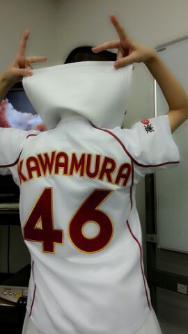

| 2013/07 10 Wed | さあさあさあ あっ、今 乃木坂を通過したっ)))) ろって ぃ-☆ |
ほっほ−−−ぃ☆☆☆
Rottyだよー ＼(^o^)／
若月〜

あにあに〜
昨日の楽屋は
左にあにあに 右に若月とゆう
座席でした^^
昨日は 東京ドームで
楽天 VS 日ハム の試合があり
ガールズルールのパフォーマンスを
させて頂きました ！
あん〜なっ
広い広い グリーンの芝生の上で
歌って踊れたことが
本当に嬉しいです ☆
観客席からも
たくさんの方が手を振ったり
応援してくださり
ありがとうございました！
なんだか 久しぶりに野球の試合を
生で見て、、、
もうすぐ始まる
夏の甲子園が今から
色々と気になり初めてきました\(▽)/
ドキドキわくわく！
これっ ！ 名前入り ))))

Rottyでした／ のし☆
コメント(145)
2013/07/10 11:42